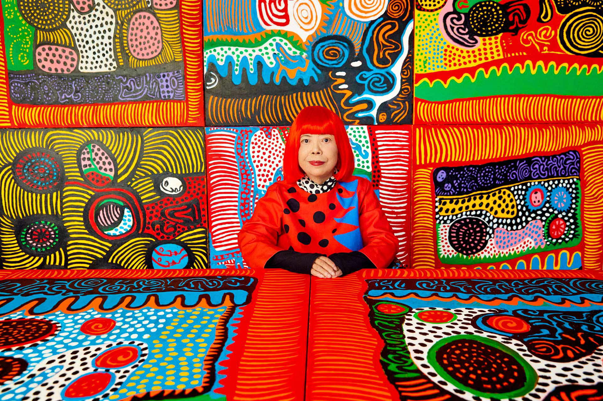

En el epicentro del mercado del arte global de 2026, un nombre resuena con la misma fuerza que hace seis décadas: Yayoi Kusama. A sus 97 años, la artista japonesa no solo es una leyenda viva, sino una fuerza cultural que ha trascendido los mueos para convertirse en un fenómeno de masas. Sus icónicos puntos de polca (polka dots) y sus calabazas monumentales son, hoy más que nunca, el símbolo de una búsqueda incansable por la "auto-obliteración" y la conexión con el cosmos.
